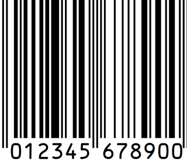

El Barcode Scanner puede escanar varios tipos de códigos: * QR * DATA_MATRIX * Códigos de barra en distintos formatos * ITF

Para iniciar el proceso de validación de manifiestos, click en la imágen.